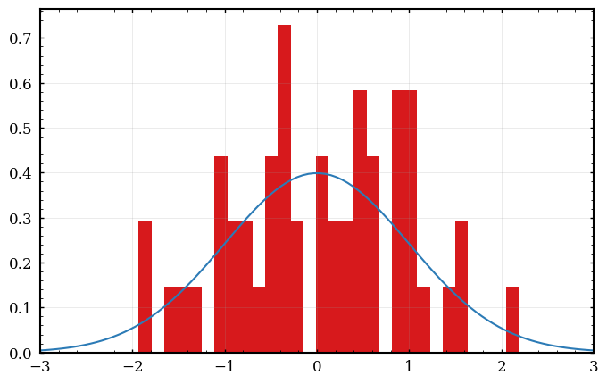
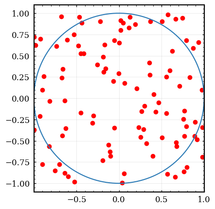
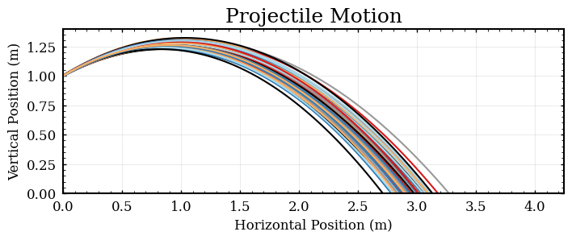
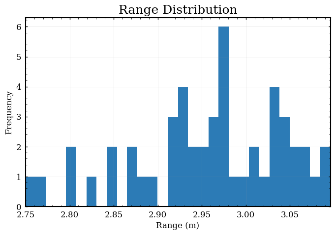

Lab 2 - Motion In 2D
Table of Contents
In this lab, you will use the Kinematic Equations to first measure, and then predict, projectile motion. In the first experiment, you will launch a ball horizontally and make the necessary measurements to calculate the initial velocity of the projectile. In the second part, you will incline the launcher and use your results to predict the new range of the projectile.
\[ x_f = x_i + v_i \, t + \frac12 a\, t^2\] \[ v_f = v_i + a \, t\] \[ v_f^2 = v_i^2 +2\, a (x_f - x_i)\]
1. Experiment 1: Horizontal Shot
- Clamp the Ballistic Pendulum to the edge of a sturdy table. Make sure that the launcher is firing as close as possible to horizontal (make a note of this systematic error. ask the instructor if you are confused).
- Locate a clear line of fire at least 3 meters free of other classmates and other objects. Fire a test shot to observe the approximate range of the launcher.
Place a piece of white paper on the floor at the approximate impact point. Tape the white paper to the floor to make sure it does not move.
This lab includes error analysis. Please take care in the next step:
- After you are satisfied with the setup, start taking real notes on the experiment. Please recall from Lab 1,the goal at the end of lab is to have these 4 parts written on paper:
- Name, Lab, Date
- Sketch of the experimental setup with detailed dimensions
- Measurements corresponding to the sketch (include error estimates)
- Basic calculated result (without error propagation)
- Measure the initial height of the ball from the floor in meters. Take a moment to think where on the ball you should take this measurement to find the overall change in height. Also include your estimated error (standard deviation).
- Fire the launcher many times. You will be estimating the uncertainty of the range with statistics, so try to make a grouping of impacts. Record the horizontal range of each launch as a list on your lab records. (Around 10 launches seems appropriate here, but remember we are looking for statistical significance, so instructions indicating a “tight grouping” may be more informative than a launch count)
- Use the mean (average) to find your measured value of \(x_f\) and the standard deviation to find the error \(E[x_f]\).
- Use your knowledge of kinematics to calculate the velocity which the ball exits the launcher.
| \(x_i=\hspace{50mm}\) | \(y_i=\hspace{50mm}\) |
| \(x_f=\) | \(y_f=\) |
| \(v_{ix}=\) | \(v_{iy}=\) |
| \(v_{fx}=\) | \(v_{fy}=\) |
| \(a_x=\) | \(a_y=\) |
| \(\hspace{30mm}t=\) |
Checkpoint:
- records of height \(y\) (with error) and range \(x_f\) (with error)
- calculation of the initial velocity \(\vec{v}_i = (v_{ix}, v_{iy})\) using the kinematic equations
2. Experiment 2: Inclined Shot
Now you will incline the launcher, which will increase the range of the launcher.
- Loosen the bolts on the launcher and reposition the launcher to an incline between \(15^\circ\) and \(25^\circ\).
Use a meter stick to make an accurate measurement of the angle which you have set. To accomplish this, place a meter stick along the upper edge of the launcher to form the hypotenuse of a right triangle. Then use trig to estimate the angle to 3 digits of precision.
\(\theta\) =
Set up the launcher on the edge of the table and measure the new height (this height changes from part 1).
\(y\) =
- As is often the case, finding the spread of outcomes via error analysis is not easy (see below). Instead lets take a shortcut, and use the upper and lower estimates of velocity to predict the minimum and maximum range.
Use your knowledge of kinematics to calculate the minimum and maximum range using the upper and lower bound for velocity found in part 1:
| \(x_i=\hspace{50mm}\) | \(y_i=\hspace{50mm}\) |
| \(x_f=\) | \(y_f=\) |
| \(v_{ix}=\) | \(v_{iy}=\) |
| \(v_{fx}=\) | \(v_{fy}=\) |
| \(a_x=\) | \(a_y=\) |
| \(\hspace{30mm}t=\) |
\(x_{Max}\) = \(x_{Min}\) =
Checkpoint:
2.1. Error Propagation - Finding the expected range
Error propagation for Horizontal Shot
- Write down each algebraic equation you used calculate these results. First write an algebraic expression for \(t\), then write one for \(v_{ix}\). You will use these equations to propagate error. \[t(y) = \qquad\qquad\qquad v_{ix}(x_f,t)=\]
Use the error propagation formula to find the propagated error in time
\[E[t] = \sqrt{\left( \frac{\partial t}{\partial y} \cdot E[y] \right)^2 } = \frac{\partial t}{\partial y} \cdot E[y]\]
Use the error propagation formula to find the propagated error in velocity
\[E[v_{ix}] = \sqrt{\left( \frac{\partial v_{ix}}{\partial t} \cdot E[t] \right)^2 + \left( \frac{\partial v_{ix}}{\partial x_f} \cdot E[x_f] \right)^2 }\]
Checkpoint:
- derivation of error formulae for time and velocity
- propagated error in velocity \(E[v_{ix}]\)
Error propagation for Inclined Shot
Propagating error leads to complications even in simple cases such as kinematics. If you attempt to go headlong into the math, you arrive at the following: (This includes clever substitute-eliminate trick)
Process for solving for range in 2D free fall without knowing time:
- write out the kinematic equations \[x_f = x_i + v_i cos(\theta)\,t\] \[y_f = y_i + v_i sin(\theta)\,t + \frac12 a \, t^2\]
- solve for time with the x equation \[t=\frac{x_f - x_i}{v_{i}cos(\theta)}\]
- substitute this result into \(y_f\) equation \[y_f = y_i + v_i sin(\theta)\left(\frac{x_f - x_i}{v_{i}cos(\theta)}\right) + \frac12 a \, \left(\frac{x_f - x_i}{v_{i}cos(\theta)}\right)^2\] \[y_f = y_i + (x_f - x_i) tan(\theta) + \frac12 a \, \left(\frac{x_f - x_i}{v_{i}cos(\theta)}\right)^2\]h
this is a useful result to use for solving physics problems (like the first exam question). But realize the part we are after for this experiment is actually the \((x_f - x_i\)) term, which is quadratic. Yikes! This is a show stopper and other methods must be used (sampling or other simulations).
The ’simplest’ sampling method is usually a Monte Carlo type simulation. Monte Carlo simply uses raw compute power and random numbers to brute force a result. In our case, this means inputting our initial conditions and running a script which calculates the posterior distribution of landing points. Lets start with a simple example of monte carlo: Calculating the number \(\pi\):
2.2. Monte Carlo Sampling (Simulation)
Gaussian Random Numbers
Before we begin, lets look at Gaussian Random Number Generators (RNG). These numbers are different than regular rand functions (uniform between 0 and 1) as they return a normally distributed number.
Some setup of external code libraries. * import statements pull in external libraries to use * numpy - numerical python routines and data structures * matplotlib - plotting library used to create figures * scipy - library of scientific routines and functions * %matplotlib inline allows you to see the graphics interactively in your web browser
Note: these libraries are imported for every subsequent cell, until you reset the runtime (see clickable dropdown menus):
Lets now generate a list of random numbers and look at their distribution as the number of samples increases
import numpy import matplotlib.pyplot as plt import numpy.random as random import scipy.stats as stats %matplotlib inline samples=50 meas_mean=0.0 meas_sigma=1.0 # create a list of 100 equally spaced numbers from -3sigma to 3sigma x = numpy.linspace(meas_mean-3*meas_sigma,meas_mean+3*meas_sigma, 100) plt.plot(x, stats.norm.pdf(x, meas_mean,meas_sigma)) # list comprehension to generate a list of normally distributed numbers random_list=numpy.array([random.normal(meas_mean,meas_sigma) for i in range(samples)]) print("first 10 numbers:", random_list[0:30]) plt.hist(random_list,30,stacked=True,density=True) plt.show()
first 10 numbers: [ 0.88904276 2.18574186 1.067634 1.49508312 0.03218881 -0.26117763 -0.39935046 1.06737505 -0.31656516 1.20699508 0.56126075 -0.72935055 0.96200383 -0.19982619 -1.93124406 -0.51402875 0.1506266 0.31760949 1.0015575 0.85493143 -1.53955998 -0.35727291 0.85347598 0.86553637 0.5600073 -0.55225765 0.53722949 -1.08350179 0.47555716 -0.54783364]

Monte Carlo: Calculating pi
Monte Carlo simulation is a somewhat generic term used to describe repeated sampling (simulation) using random numbers as inputs. Lets explore a common example of Monte Carlo sampling: using a dart board to calculate the value of \(\pi\)
Imagine you have a dart board of radius 1m and can randomly throw darts at this board over the square range {-1m to 1m} in both the x and y directions. \(\pi\) can be calulated by “throwing” many darts uniformly over this range and counting the ones which land within r=1 of the center. Successful dart throws are used to calculate pi with the following ratios:
\[\text{ratio}=\frac{\text{inner}}{\text{total}} = \frac{\pi r^2}{\ell \cdot w} = \frac{\pi}{4}\]
\[\pi = 4\cdot \text{ratio}\]
The main advantage of the Monte Carlo method is how generic the application is to almost any problem. Simply create random numbers and let the computer hit the problem with a sledge hammer method. Much like a real sledge hammer, the Monte Carlo method is amazing at getting a job done quickly. Unfortunately sledge hammer methods are almost never the fastest at getting the job finished. Convergance for Monte Carlo is extremely slow. This negative property can be overcome with modern computers on simple problems. Specific sampling methods with much better convergance and more realistic properties exist in every field of science and engineering.
# Set up counters inside=0 outside=0 guesses=100 for i in range(guesses): # use a random guess for x and y between -1 and 1 guessx = random.rand()*2-1 guessy = random.rand()*2-1 if guessx**2+guessy**2<1: inside+=1 else: outside+=1 if i<500: plt.plot(guessx,guessy,'ro') plt.plot([numpy.cos(q) for q in numpy.arange(0,2*numpy.pi,0.01)],[numpy.sin(q) for q in numpy.arange(0,2*numpy.pi,0.01)]) plt.gca().set_aspect('equal') print(guessx,guessy) print("Inside: ",inside) print("Outside: ",outside) print("inside shots: ",inside/guesses*100,"% of area") # A = pi*r**2 = pi*d**2/4 -> pi = 4*A/d**2 = 4*A print("Pi: ",4*inside/guesses) plt.show()
0.5566295811516349 0.2532620287523366 Inside: 74 Outside: 26 inside shots: 74.0 % of area Pi: 2.96

Here is a smaller version of the above code, which excludes the figures:
# Compact version of Monte Carlo estimation of pi guesses=1000000 inside=0 for i in range(guesses): if random.rand()**2+random.rand()**2<1: inside+=1 print(4*inside/guesses)
3.142688
2.3. Monte Carlo: Kinematics in 2D
Lets now use the Monte Carlo method to simulate our ball launch.
Simply using the kinematics equations and giving normally distributed random values for the initial height, initial velocity, and angle of incline.
Code
from numpy.random import normal as randnorm # import and alias RNG as randnorm # Declare measured initial conditions yi, Eyi = 1, 0.002 vi, Evi = 4.6, 0.1 theta, Etheta = 30*numpy.pi/180, 1*numpy.pi/180 ay = -9.8027 # create a list of uniforly spaced numbers for the time axis time=numpy.array(numpy.arange(0,1,0.01)) # perform the kinematics calculation a bunch o times for i in range(100): # x=xi+vix*t = 0 + vi*sin(theta)*t xpath=randnorm(vi,Evi)*numpy.cos(randnorm(theta,Etheta))*time # y=yi+viy*t-4.9t^2 = yi + vi*sin(theta)*t-49.t^2 ypath=randnorm(yi,Eyi)+randnorm(vi,Evi)*numpy.sin(randnorm(theta,Etheta))*time+0.5*ay*time**2 plt.plot(xpath,ypath) plt.ylim(0,1.4) plt.xlabel('Horizontal Position (m)') plt.ylabel('Vertical Position (m)') plt.title('Projectile Motion') plt.gca().set_aspect('equal') plt.show()

This is a very nice figure, but the code is not calculating what we want. The above code calculates x and y for a list of times (perfect for making a plot of the trajectories) but we want a distribution of ranges at a specific value of height. To proceed with the above data, you could search thru the list and find the time which the vertical position becomes negative. This sounds like a fine exercise for a programming class, but I wish to proceed in a different direction.
Lets just follow the standard method of calculating the range of an inclined shot from physics lecture: 1. Break up the velocity vector into components 1. Use the y direction to solve for time (quadratic eqn) 2. Use the calculated time to find the range
First I will write a function which calculates the ballistic motion and returns the horizontal range:
from numpy.random import normal as randnorm # import and alias RNG as randnorm # vars to use as input: vi, theta, yi # Kinematics in y-direction: 0=yi+vi*sin(theta)*t - 4.9 t^2 # qadratic equation with a=-4.9 b=vi*sin(theta) c=yi # t = (-b - sqrt(b*b - 4*a*c))/(2*a) # Kinematics in x-direction: # x = xi + vi*cos(q)*t # requires 3 inputs: vi, theta, yi # outputs the calculated range def ballistic_sim(vi,theta,yi): a,b,c=-4.9, vi*numpy.sin(theta), yi t = (-b - numpy.sqrt(b*b - 4*a*c))/(2*a) return vi*numpy.cos(theta)*t # Calculate the trajectory for a randomly chosen set of input parameters # uses randnorm() to generate random input values for vi, theta, and yi for i in range(10): print("random shot",i,":",ballistic_sim(randnorm(vi,Evi),randnorm(theta,Etheta),randnorm(yi,Eyi)) )
random shot 0 : 2.9289935263206712 random shot 1 : 2.900701593352605 random shot 2 : 2.997137697450059 random shot 3 : 2.828294666040706 random shot 4 : 3.041866795345137 random shot 5 : 2.8241566539950558 random shot 6 : 2.9930605549690967 random shot 7 : 3.140907287037761 random shot 8 : 2.848698030716433 random shot 9 : 3.116870688681708
shots=[ballistic_sim(randnorm(vi,Evi),randnorm(theta,Etheta),randnorm(yi,Eyi)) for i in range(50)] print("Range: ",numpy.mean(shots),"+-", numpy.std(shots),"m") plt.hist(shots,30) plt.xlabel('Range (m)') plt.ylabel('Frequency') plt.title('Range Distribution') plt.show()
Range: 2.9586283521517305 +- 0.08410393637801683 m

Checkpoint:
- Make sure you can run the above code! (you will need this for the abstract)
- Propagate error for the initial velocity for the horizontal shot
- Record values for the angle and height (with measurement error)
- Use Monte Carlo to calculate the expected range for the inclined shot
3. Practice: Writing an Abstract
Note: We are Math people. English is hard. Writing lab reports takes real effort and time. Writing an Abstract however, should only take you 10 or 15 minutes to complete.
To finish this lab exercise, you will practice writing an abstract. This is not a requirement for each lab, but is a critical skill for you to learn/hone in the future. This type of statement has 4 parts: Purpose, Method, Results, Conclusion (take a look at the link above more explanation).
Checkpoint:
- Write your abstract and submit!